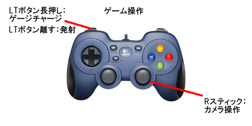
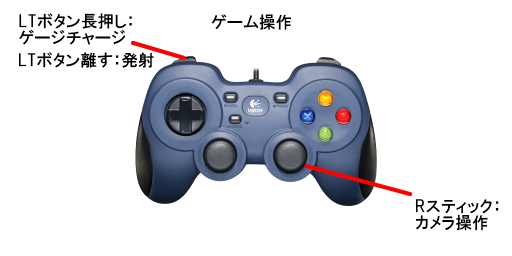
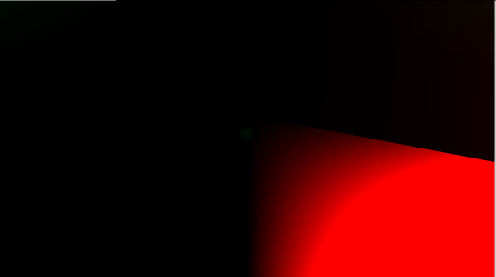

GrAbility
操作説明
 

担当ソースコード
好村
豊岡 大
- LockOn.cpp(一部)
(LockOn処理部分を担当)
- LockOn.h(一部)
(LockOn処理に必要な変数を追加)
- Bloom.cpp
- Bloom.h
- FontRender.cpp
- FontRender.h
- IRenderer.h
- ModelRender.cpp
- ModelRender.h
- PhysicsStaticBox.cpp
- PhysicsStaticBox.h
- PostEffect.cpp
- PostEffect.h
- RenderingEngine.cpp
- RenderingEngine.h
- SceneLight.cpp
- SceneLight.h
- SerialNumberSpriteRender.cpp
- SerialNumberSpriteRender.cpp
- ShadowMapRender.cpp
- ShadowMapRender.h
- SpringCamera.cpp
- SpringCamera.h
- SpriteRender.cpp
- SpriteRender.h
- LevelRender.cpp
- LevelRender.h
- MapChipRender.cpp
- MapChipRender.h
- Level2DRender.cpp
- Level2DRender.h
- MapChip2DRender.cpp
- MapChip2DRender.h
改造したエンジンのコード
好村
豊岡 大
- MeshParts.cpp、MeshParts.h
速度マップ描画用の定数バッファ追加。
- Model.cpp、Model.h
速度マップ描画用の定数バッファを更新する処理追加。
川瀬式ブルーム
通常シーンをオフスクリーンレンダリング後、輝度抽出を行い、
ガウシアンブラーとダウンサンプリングを繰り返して複数枚のテクスチャを作成して、
複数枚のテクスチャの平均を取って加算合成することで
光のあふれを表現できるようになっています。
通常シーン

輝度抽出

ガウシアンブラーとダウンサンプリング（これを複数回繰り返す）

加算合成後

モーションブラー
現在のモデルの位置と１フレーム前のモデルの位置から
そのピクセルの移動速度を計算、速度マップを描画。
その速度マップを使用して通常シーンを速度方向にずらして複数回サンプリングして平均を取ってそのテクスチャを加算合成することで
残像のようなポストエフェクトを表現しています。
通常シーン

速度マップ

加算合成後